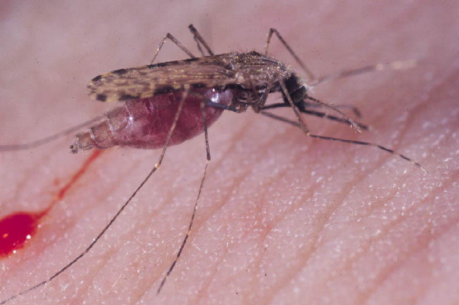

MaLARea Pass
(verifying the 60 hard problems)

- Problems are hard because translation adds too much background knowledge
(e.g., encoding the type system used by the Mizar verifier)
- Further restriction of the MPTP algorithm for adding background knowledge is hard
(we want to avoid incomplete methods at that level)
- Solution: MaLARea
Heuristic pruning of axioms based on machine learning from previous proofs
- 759 problems (including the 60 unsolved) used for MaLARea's learning
- 742 solved by MaLARea, leaving 17 of the original 60 unsolved
- The remaining 17 attempted manually